The bridge between Ghana and Europe.
A not-for-profit AI innovation centre in Accra. European organisations gain trusted access to Ghanaian AI talent and solutions; Ghanaian companies, entrepreneurs and AI professionals gain access to European clients, projects and partnerships.
Official launch and side event
6th German-African Business Summit (GABS)
24th – 25th November, 2026, Accra

gabs2026.comTuesday, 24 November 2026, 15:00 – 17:00
Westerwelle Startup Haus, Accra
Wednesday 25 November 2026, 10:00 – 12:00
Kempinski Hotel Gold Coast City, Accra
Who should attend
- European corporates exploring Ghanaian AI delivery capacity and access to talent
- Investors and development finance institutions
- Ghanaian AI companies, start-ups and researchers
- Government institutions, Policymakers and ecosystem partners
Attendance is open to all registered GABS 2026 delegates.
Who we are
The talent is here. The route was not.
The AI Hub, Ghana is a not-for-profit initiative that connects Ghana’s fast-growing artificial intelligence ecosystem with Europe.
Ghana has strong AI talent, entrepreneurial energy, and clear government backing through the National AI Strategy — what has been missing is a structured access point to European markets.
The Hub closes this gap: it serves as a bilateral bridge between Ghana and Europe, through which European organisations gain trusted access to Ghanaian AI talent and solutions, and Ghanaian companies, entrepreneurs, and AI professionals gain access to European clients, projects, and partnerships.
A particular focus lies on Ghana’s growing start-up sector: the Hub enables young companies to implement their business ideas faster through AI tools, training, and incubation support.
All surpluses are reinvested in the mission — building AI skills, jobs, and businesses.
See how it worksWhat we do
Five lines of work.
We make the introduction, and we stand behind it. The Hub finds and prepares Ghanaian AI professionals and teams, matches them to European work, and stays involved so that quality, governance and communication are somebody’s job rather than nobody’s. For you, that means a way into a new talent market without having to build a presence there first.
Access to
AI talent
Trusted, vetted access to Ghanaian AI professionals and teams — for projects, for capacity, or for the long term.
Training &
capacity building
Practical programmes in AI fundamentals, applied machine learning and responsible AI that prepare Ghanaian talent for international project work and help companies build AI capability.
Research &
development
Collaborative R&D with Hub-affiliated universities and specialists on applied research, datasets and pilots, feasibility studies, and proof-of-concept development for new AI use cases.
Innovation &
AI use cases
Co-developing practical AI solutions and use cases with a quality-assured pool of Ghanaian AI professionals: feasibility, solution scoping and rapid prototyping.
AI governance
& compliance
Advisory on responsible deployment: risk classification, regulatory alignment, ethics review and governance design, data protection, and European regulatory requirements (e.g. EU AI Act readiness).
The corridor
One route. Both directions.
For Ghanaian talent and ventures
- European clients and project work
- Training and certification to international standards
- Incubation support for AI-enabled ventures
- Placement on international assignments
For European organisations
- Vetted Ghanaian AI professionals
- Cost-effective delivery capacity for practical AI work
- Transparent governance and EU AI Act readiness
- On-the-ground presence in Accra
Membership
Built around people who build.
-
A practitioner network
Founders, engineers, researchers and operators working on the same problems.
-
Incubation for early ventures
Support to validate an idea, build with AI tools and reach a first customer faster.
-
Access to the talent pool
Quality-assured professionals matched to European project work.
-
University collaboration
Joint research, student projects and knowledge exchange across both regions.
Surpluses reinvested in
AI skills, jobs and businesses.
For partners
Anchored in a bilateral network.
Government institutions, universities, chambers of commerce, development organisations and companies on both sides, each with a defined role in keeping quality and trust in the corridor.
Start a conversationGovernment
Policy alignment with the National AI Strategy.
Universities
Research, talent development and responsible AI.
Business chambers
Market access and member introductions.
Development partners
Co-funded programmes and inclusive growth.
Companies & start-ups
Clients, sponsors, members and pilot partners.
Get involved
Shape the corridor from the start.
Join as a member, a project partner or a supporter. Registering your interest is non-binding and carries no obligation to procure.
interest